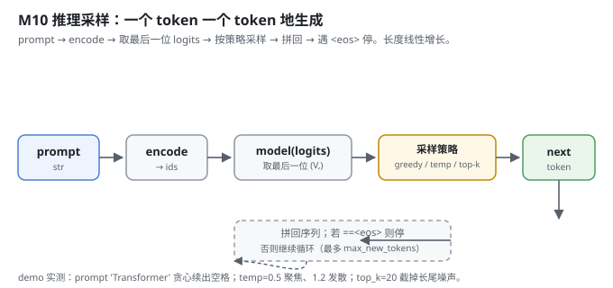
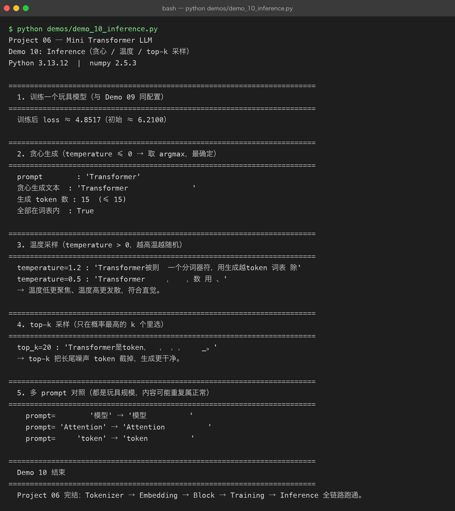

Milestone 10 — Inference：一个 token 一个 token 地采样
Milestone 09 训出了权重。最后一步是推理：拿前缀，让模型自回归地一个一个吐出后面的 token，直到遇到 <eos> 或达到长度上限。这是 Milestone 01 那条数据流的终点，也是整个 Project 06 的收尾 —— Tokenizer → Embedding → Block → Training → Inference 全链路跑通。
Project 05 里「模型给我一段文本」是黑盒输出；这里 generate 的每一步我都看得见：取最后一位 logits、按策略选下一个 token、拼回去、再喂。
1. What / Why：为什么是「循环采样」而不是「一次出整句」
Transformer 每次只预测「下一个 token」（Milestone 08 的自回归目标决定了）。所以生成就是个循环：喂当前上下文 → 取最后一位 logits → 选下一个 → 拼回 → 再喂。复杂度随生成长度线性增长（每步只用到已生成的 token + 新采的 1 个）。
三种采样策略对应三种「确定性 vs 多样性」的取舍：
- 贪心（temperature ≤ 0）：取 argmax，最确定、最无聊。
- 温度采样（temperature > 0）：用
1/t缩放 logits 后 softmax 采样；越高越随机。 - top-k：只在概率最高的 k 个里选，截掉长尾噪声。
2. Design：prefill 最后一位 + 三种策略
src/model/inference.py：
generate_ids：把prompt编码成 id，循环max_new_tokens次：只保留最近ctx_len个 token（防超位置编码长度）→ 喂模型 → 取logits[0, -1, :]（最后一位）→ 按策略选next_id→ 若next_id == EOS_ID就停，否则ids.append(next_id)。generate：generate_ids的封装，返回tokenizer.decode(ids, skip_special=True)文本。logits_of_prefix：工具函数，返回 prompt 最后一位的 logits（供 demo 看分布）。- 采样实现：
temperature <= 0 → argmax；否则logits/t → top_k 截断 → softmax → rng.choice，全程 numpy。

3. Real-run evidence（来自 demos/out/demo_10_inference.txt）
真实环境：Python 3.13.12 | numpy 2.5.3。玩具模型（同 Demo 09 配置），训练后 loss ≈ 4.8517（初始 ≈ 6.2100）。
贪心最确定，但玩具模型只会「续空格」（因为训练语料里 <bos> 后常跟空格，且模型没真学会语言）：
prompt : 'Transformer'
贪心生成文本 : 'Transformer '
生成 token 数 : 15 (≤ 15)
全部在词表内 : True温度采样符合直觉 —— 低温聚焦、高温发散：
temperature=1.2 : 'Transformer被则 一个分词器符，用生成越token 词表 除'
temperature=0.5 : 'Transformer ， ，数 用 、'
→ 温度低更聚焦、温度高更发散，符合直觉。top-k 截掉长尾噪声，生成更干净：
top_k=20 : 'Transformer是token， ， ，， _。'
→ top-k 把长尾噪声 token 截掉，生成更干净。多 prompt 对照（玩具规模内容重复属正常）：
prompt= '模型' → '模型 '
prompt= 'Attention' → 'Attention '
prompt= 'token' → 'token '「全部在词表内 : True」说明生成的 id 都合法、解码不会塌成 <unk> 或越界 —— 推理闭环是自洽的。

4. Bugs / lessons
本 milestone demo 没有暴露真实运行 bug。一个设计提醒（来自源码）：拼接上下文时 ctx = ids[-ctx_len:]，避免序列超过 max_len 导致位置编码索引越界（Milestone 03/07 都校验过 seq_len ≤ max_len）。推理循环里这步截断是必须的，否则长生成会直接 ValueError。
关于「贪心只续空格」：这不是 bug，是玩具规模（150 步、280 样本）的真实结果 —— 模型远没学会语言，只是 loss 比随机低。如实记录比假装「生成流畅」更诚实，也呼应 Milestone 09「曲线抖动、整体下行」的结论。
5. Conclusion
- 推理是自回归循环：取上下文最后一位 logits → 按策略采样 → 拼回 → 遇
<eos>停；长度线性增长。 - 贪心最确定但最无聊；温度高更发散、温度低更聚焦；top-k 截长尾噪声更干净。
- 玩具模型收敛有限（loss≈4.85），生成的「续空格」是真实结果、非 bug。
ctx = ids[-ctx_len:]截断防位置编码越界，是推理循环的必要保护。- 全链路闭环：Tokenizer → Embedding → Block → Training → Inference 真实跑通，每个生成的 token 都在词表内。
6. Code map
| 文件 | 职责 |
|---|---|
src/model/inference.py | generate_ids（自回归采样循环）、generate（返回文本）、logits_of_prefix（看分布）；greedy / temperature / top-k 三策略 |
src/model/decoder.py | 复用的 TransformerLM |
src/tokenizer/base.py | 复用的 EOS_ID（遇它则停）、decode |
demos/demo_10_inference.py | 5 节演示：训练 / 贪心 / 温度 / top-k / 多 prompt，输出落 demos/out/demo_10_inference.txt |
assets/inference.svg | 本章采样循环图 |
7. Version line
v0.8 → v0.9，推理采样落地（贪心 / 温度 / top-k，遇 eos 停止），全链路 Tokenizer→Embedding→Block→Training→Inference 跑通；纯 numpy、无 torch。演示真实跑通并核对三种策略输出与词表内合法性，配图 1 张手写 SVG + 1 张真实终端截图。Project 06 完结。